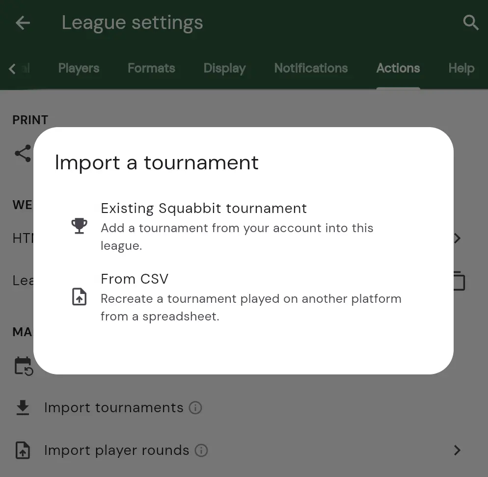
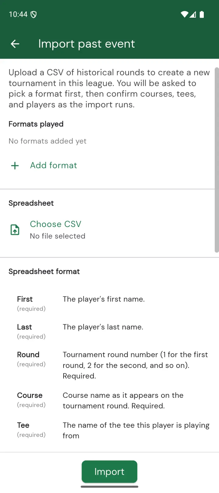
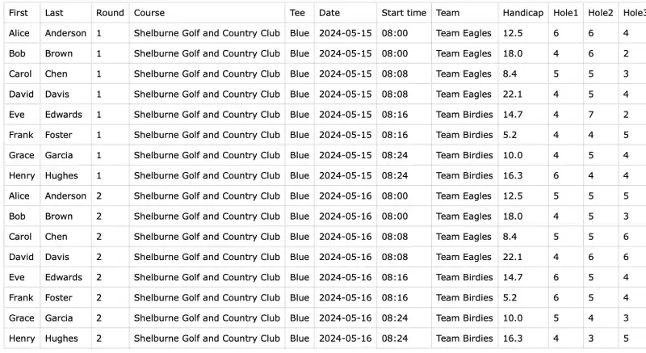

Recreating a Tournament From Another App
Switching to Squabbit from another golf app and don’t want to lose the events you’ve already played? Squabbit can recreate a past tournament from a spreadsheet of your historical scores. The result is a real Squabbit tournament inside your league with full leaderboards, stats, and round histories — exactly as if it had been played in Squabbit from the start.
This is the easiest way to bring league history with you when you migrate from another platform.
Before you start
You’ll need:
- A league in Squabbit. The recreated tournament gets attached to it. If you don’t have one yet, see Creating a League first.
- A CSV file with one row per round played by each player. Most golf apps and spreadsheets can export to CSV.
Step 1: Open the import dialog
Open your league’s settings by tapping the gear icon, expand the Other section, and tap . You’ll be asked where you want to import from — tap From CSV.

Step 2: Add the formats that were played
The import page asks you to add the tournament formats that were played in the event. You can add as many as you need — for example a Strokeplay format and a Skins format if both were running.
Tap Add format to pick a format. You’ll see the same format picker used when creating a new tournament.

Repeat for each format you want included. To remove a format you added by mistake, tap the X on its row.
Step 3: Choose your CSV file
Tap Choose CSV and pick the file from your phone. Once selected, the file name appears underneath the row so you can confirm you grabbed the right one.
Step 4: Tap Import
Tap the green Import button at the bottom. Squabbit will walk you through a few prompts to fill in anything that can’t be inferred from the spreadsheet:
- Courses. For each unique course name in your CSV, you’ll be asked to pick the matching course from Squabbit’s course database. The picker is pre-filled with the course name from your file.
- Tees. If a tee name in your CSV doesn’t match a tee on the course you picked, you’ll be shown the tees on the course and asked to pick the matching one.
- Players. Players already in your league are matched automatically by name. For any player who isn’t in the league yet, Squabbit will offer to add them — either by linking to an existing Squabbit user with the same name, or by creating a new player.
Once everything is resolved, Squabbit creates the tournament, adds it to your league, and opens it so you can verify the results. The tournament is named after the earliest date in your CSV — you can rename it from the tournament settings afterwards.
Spreadsheet format
The CSV uses one header row plus one data row per round played by each player. Columns can appear in any order, and column names are matched case-insensitively.
| Column | Description | |
|---|---|---|
First | Required | Player’s first name. Used to match against league participants. |
Last | Required | Player’s last name. |
Round | Required | Tournament round number (1 for the first round, 2 for the second, and so on). This decides which Squabbit tournament round each row belongs to. |
Course | Required | Course name as it appears in Squabbit’s course database. You’ll be asked to confirm the match during import. |
Tee | Required | Tee name played from (e.g. “Blue”, “White”). |
Date | Required | Date the round was played, in YYYY-MM-DD format. |
Hole1 … Hole18 | One of these | Per-hole scores. Use this if you have hole-by-hole data. |
Total | One of these | Just the total score for the round. Use this when you only know the final number. |
Differential | One of these | The handicap differential for the round. Use this when the course rating has changed since the round was played. |
Start time | Optional | Tee time in HH:MM 24-hour format. Players who share the same Round and Start time are placed on the same scorecard. Leave blank to put each player on their own scorecard. |
Team | Optional | Team name for the player. Required if you picked a team format. Players who share a team name are grouped into the same team. |
Handicap | Optional | Per-round handicap index override for net scoring. Use this if the player’s current Squabbit handicap is different from what they had when the round was played. |
Each row needs to provide scoring data via either the Hole1–Hole18 columns, a Total, or a Differential.
Example
Here’s an example CSV with two rounds played by eight players, paired into four scorecards by start time, and split into two teams:

Most spreadsheet apps (Excel, Google Sheets, Numbers) can export to CSV via File › Save As or File › Download.
What if something is wrong?
Squabbit checks the whole spreadsheet before writing anything, so a single bad row won’t leave a half-imported tournament behind. If errors are found, you’ll see a dialog listing every row that needs fixing along with the reason. Fix the issues in your spreadsheet and try the import again.
Common errors include:
- A required column is missing from the header row.
- A row references a Round number that doesn’t make sense (e.g. Round 5 in a tournament that only had 3 rounds’ worth of data).
- A row has no scoring data — neither hole scores, a Total, nor a Differential.
- A team format was selected but the Team column is missing.
If a date in the spreadsheet doesn’t match the rest of the round it belongs to, Squabbit will warn you before proceeding so you can confirm or back out.
After importing
The imported tournament is a normal Squabbit tournament. You can edit any setting, add more rounds, change the format, fix players, or delete it entirely. Rounds you imported can be edited from each player’s scorecard, and as the admin who created them, you can also delete them from the player’s profile if you imported them by mistake.
If your league uses league handicaps that are calculated from event rounds, the imported rounds are factored in automatically.
Enjoy!